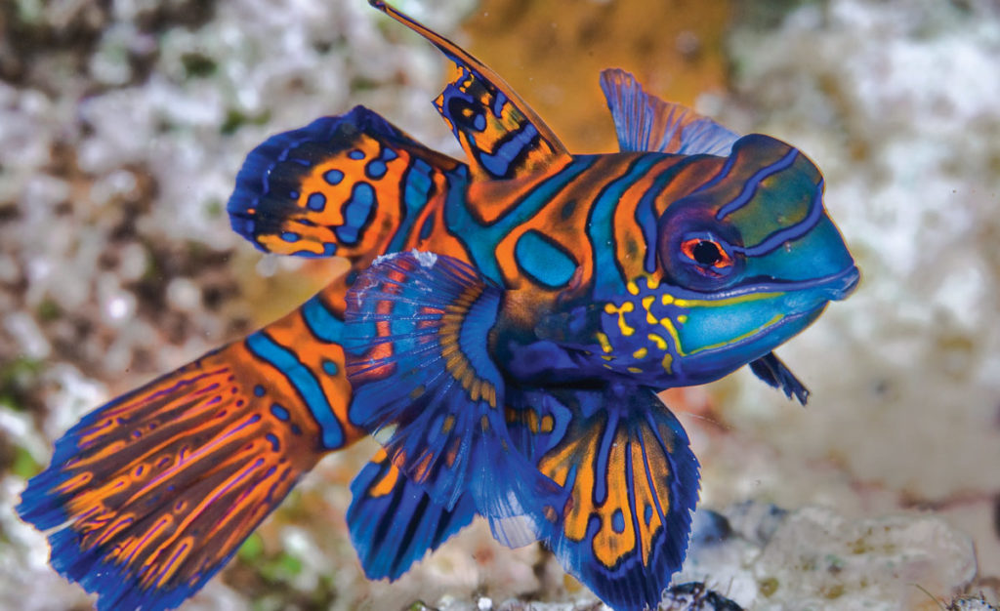

Mandarin Fish
< Sunset Moth
Panther Chameleon >
The Mandarin Fish (Synchiropus splendidus), also known as the Mandarin Dragonet, is a small, brilliantly colored fish found in the tropical waters of the Pacific, particularly in the Indo-Pacific region. Renowned for its stunning and intricate patterns, the Mandarin Fish showcases a vibrant mix of electric blue, orange, and green hues. Its distinctive appearance serves as both a visual spectacle and a form of camouflage among coral reefs. Mandarin Fish are primarily reef-dwellers, preferring sheltered areas with ample coral coverage. Unlike many other fish, they do not have scales but instead feature a layer of mucus to protect their skin. These fish have a unique feeding behavior, often preying on tiny crustaceans and copepods by using their specialized jaws. Due to their captivating appearance, Mandarin Fish are popular among aquarium enthusiasts, although their care can be challenging, emphasizing the need for sustainable practices in the aquarium trade to preserve these colorful marine species.